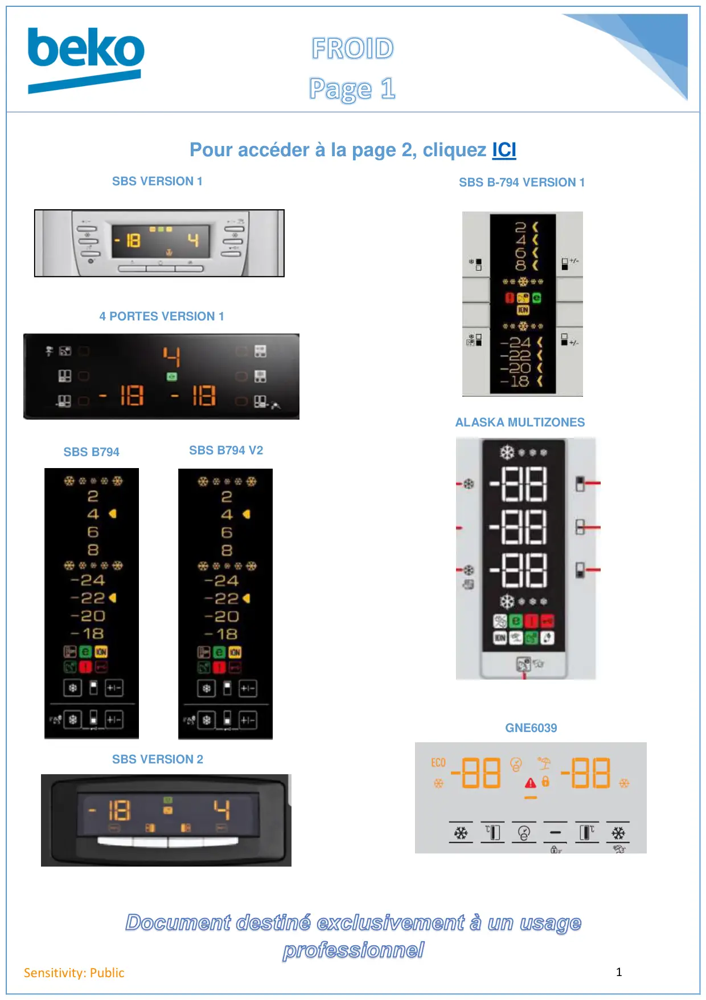

FROID page accueil

1Sensitivity: PublicSBS VERSION 1SBS B794SBS VERSION 2SBS B794 V2SBS B-794 VERSION 1ALASKA MULTIZONES4 PORTES VERSION 1Pour accéder à la page 2, cliquez ICIGNE6039
1 / 1Liens de ce document (9)
≡FROID2 page accueilMenu · 12 liensPDFProgrTest B1030 GNE35714 Fr4 p.PDFProgrTest CN136220D Fr7 p.PDFProgrTest B1020 GNE25814 Fr3 p.PDFProgrTest CN142220 B794 V27 p.PDFProgrTest B794 V1 CN142220 Fr7 p.PDFProgrTest T74530NE CN151920DX Fr5 p.PDFProgrTest G92605NE GNE134620X5 p.PDFProg Test REF GNE60392 p.